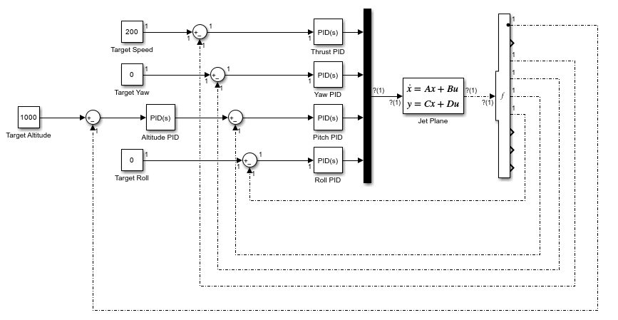
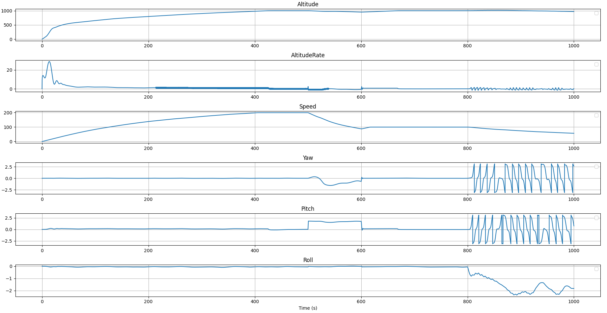

Python · NumPy · Nonlinear State-Space Modeling · Jacobian Linearization · PID Control · Unity (visualization)
A nonlinear state-space model of a fly-by-wire fighter jet, deliberately unstable like a real modern
fighter, flown through takeoff, level flight, a Pugachev's Cobra, and an uncontrolled tumble, all
under cascaded PID control.
Coursework project for Dynamic Systems, done solo.
Full writeup with the derivations, linearization, and controllability/observability testing is in the
report (PDF).
Demo
How it works

The aircraft is an 8-state nonlinear system (altitude, speed, yaw, pitch, roll, and their rates), with pitch given negative damping so it diverges on its own without control input, the same relaxed-stability approach real fighters use for maneuverability. Yaw, pitch, roll and speed each get their own PID loop, and altitude drives the pitch setpoint from an outer loop.
Results

Full mission profile: takeoff and climb to 1000m, cruise, a Pugachev's Cobra between 500-600s, then regulators off at 800s to fall out of the sky. This was the test the whole model was built to survive. With regulators off, pitch runs away first since that's the unstable axis, yaw follows once the tail stops pointing into the airflow, and the aircraft tumbles under its own angular momentum.